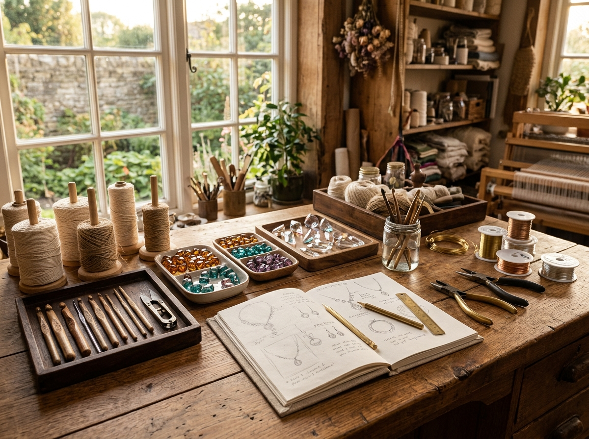
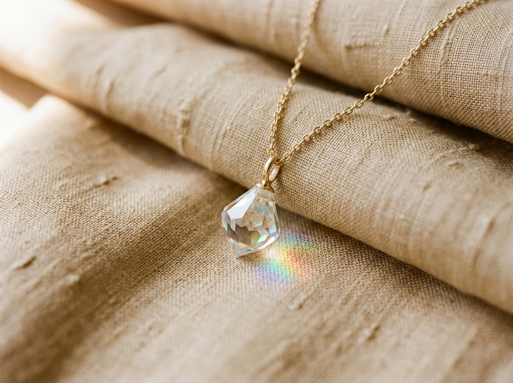
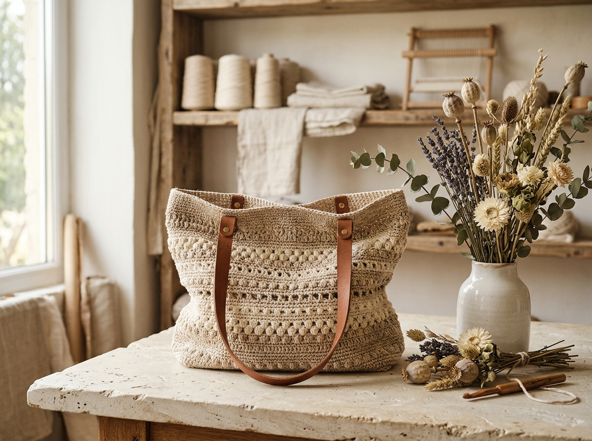

A slow conversation between fibre and light.
In a world defined by industrial automation, we choose to work at human pace. Crochet cannot be replicated by any modern factory machine; every stitch requires the deliberate tension of human hands, looping natural cotton into heirloom accessories.
Beside the yarn bowls sit trays of Bohemian glass, Austrian crystal elements, and non-tarnish gold wire. Where crochet brings warmth and gentle tactile softness, faceted crystals capture the sunlight and turn ordinary gestures into luminous moments.


One piece at a time. Zero mass production.
We work in micro-batches and bespoke commissions. When you order a piece from Knots & Facets, it is crafted specifically for you. The glass stones are hand-selected for clarity and refraction, while our crochet threads are tension-tested for durability and comfort against sensitive skin.
No two pieces are ever identical. The slight organic variance in bead facets or the subtle texture of cotton slub is the unmistakable signature of authentic human craftsmanship.
Our Craft Manifesto
Every decision in our studio is rooted in four uncompromising commitments.
Slow Rhythm
We honor the time each piece demands. Rushing compromises beauty, so we give each knot and wire wrap our undivided focus.
Conscious Fibres
100% natural organic cotton, raw flax linen, and non-toxic plant dyes that are gentle on both your skin and the earth.
Prismatic Clarity
We use genuine faceted glass and lead-free crystal elements that turn ambient room light into vibrant rainbow spectacles.
Plastic-Free Gifting
From recycled kraft boxes to botanical dried sprigs and wax seal impressions, our unboxing experience is entirely biodegradable.
What Goes Into Each Creation
We believe you deserve to know exactly what touches your skin and graces your everyday rituals.
| Component | Source & Grade | Why We Choose It |
|---|---|---|
| Glass & Crystal Elements | Bohemian Czech Glass & Precision Cut Crystals | Exceptional refractive index that produces vivid rainbow flares in natural window light. |
| Earring Wires & Chains | 14k Gold-Filled & 925 Sterling Silver | Hypoallergenic, water-resistant, and non-tarnishing. Far superior to flash-plated base metals. |
| Crochet Yarn & Thread | Organic Combed Cotton & Belgian Flax Linen | Breathable, wash-durable, and free from harsh synthetic petroleum-based acrylics. |
| Bag Handles & Trims | Vegetable-Tanned Bridle Leather | Ages with a rich honey patina over time without chemical chromium tanning. |
| Packaging & Keepsake Boxes | FSC-Certified Recycled Kraft & Pure Beeswax | Completely plastic-free, recyclable, and designed to be treasured as a jewelry storage box. |
“When you wear a faceted crystal or carry a hand-crocheted bag, you are not merely accessorizing — you are carrying hours of stillness, meditation, and human presence.”